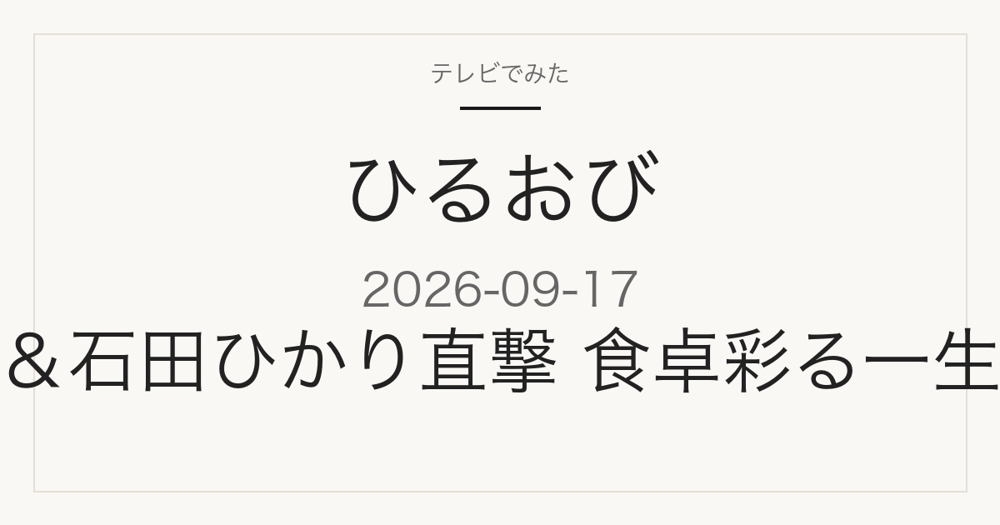

この記事には広告・アフィリエイトリンクが含まれる場合があります。
2026年9月17日（木）放送
ひるおび
有村架純さん＆石田ひかりさん直撃
ドラマな日常に迫る企画と、食卓を彩る一生モノ特集への中継が予定
これは放送前の記事です。番組表で確認できた内容だけを載せています。店名・商品名・価格はまだ発表されていません。放送後、確認できたものから同じページに追記します。
紹介予定の内容を見る
特集概要
2つの企画が予定されています
店名・商品名は未発表
TBSの番組表によると、この回は2本立てでした。店名・商品名・価格はいずれも記載がありません。
- 有村架純さん＆石田ひかりさん直撃「ドラマな日常」 — 番組表の表記は「有村架純＆石田ひかり直撃！ドラマな日常」です
- 食卓彩る一生モノ特集への中継 — 番組表の表記は「中継！食卓彩る一生モノ集結」です。長く使える食卓まわりの品を紹介する企画とみられます
出典は2026年9月17日のTBS番組表 10時25分枠（2026年9月16日確認）です。放送前に公表された情報のため、実際の放送内容とは異なる場合があります。
見たあとに
気になった品を探すには
「一生モノ」特集で紹介される品は、商品名とメーカーさえ分かればあとから探しやすいものがほとんどです。ただ放送中は商品名が一瞬で流れてしまい、あとから思い出せないことがよくあります。
このページは同じURLのまま更新します。放送を見ながらブックマークしておけば、あとで商品名・店名・価格を確認できます。
載せるのは、番組公式かメーカー・店舗の公式情報で確認できたものだけです。SNSの投稿だけを根拠にした断定はしません。
出典
2026年9月17日 TBS番組表の10時25分枠
当サイトは番組公式サイトではありません。放送内容は変更になる場合があります。